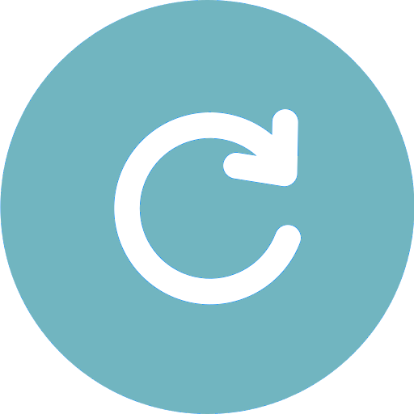
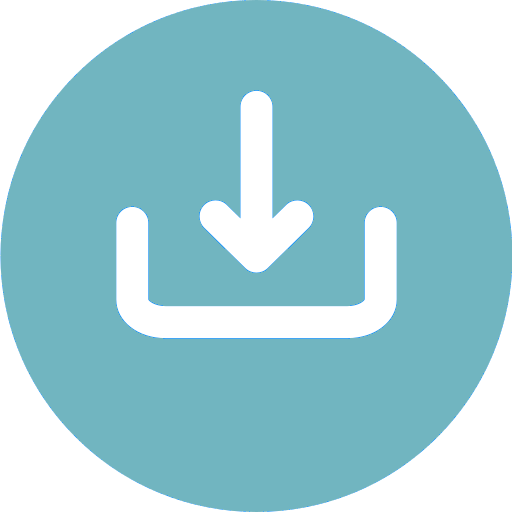

{{ value }}
{{ option }}
Adaptive Frame-Skipping
{{ option.label }}
{{ playButtonCaption() }}
Graph
Messages
{{ pendingMessageCount }}
Real-time metrics will appear here once playback starts.


{{ dataMessages || 'No messages yet.' }}